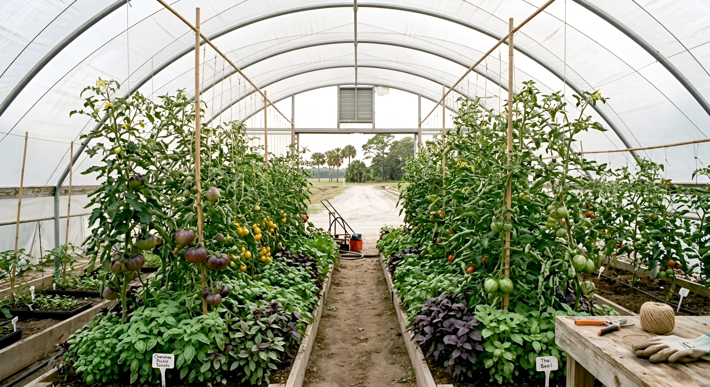

Sugar
Sugarcane
Cane fields, planting, harvesting, transport, processing, machinery, field organization, and the physical landscape surrounding the sugar system.

The field behind the visitor experience.
Palm Beach County is developing a new relationship between agriculture and tourism. P1Lab is documenting the agricultural world behind that emerging experience: land, crops, water, tools, machinery, nurseries, processing, buildings, working landscapes, and the systems that make agricultural production possible.
The geographic boundary is Palm Beach County. The subject is the material agricultural field — documented at a moment when that field is increasingly being understood as part of the county's tourism future.

Palm Beach County's emerging tourism strategy identifies agritourism and rural experiences as areas for development. This record begins with the agricultural world itself — the physical field beneath that emerging experience.
The record follows the land, water, crops, tools, machinery, nurseries, packing, processing, buildings, roads, equipment, and other physical systems that make agriculture possible.
It also follows the places where agriculture becomes visible to the public: farm markets, working farms, plant nurseries, food systems, educational experiences, culinary connections, and other points where the agricultural field begins to meet the visitor economy.
The purpose is not to produce an agritourism guide. It is to document the agricultural systems that an emerging agritourism economy is beginning to make more visible.
The field is geographically bounded, but materially diverse. The record follows agricultural systems across the county and the places where those systems intersect with food, landscape, commerce, and visitors.
Cane fields, planting, harvesting, transport, processing, machinery, field organization, and the physical landscape surrounding the sugar system.
Field production, irrigation, seasonal work, harvesting, equipment, handling, packing, and movement toward market.
Propagation, containers, growing systems, shade structures, irrigation, plant handling, transport, retail, and landscape plant production.
Fields, soils, drainage, canals, water control, roads, boundaries, cultivated land, and the physical relationship between agriculture and surrounding development.
Hand tools, tractors, implements, pumps, trailers, storage, farm vehicles, machinery, materials, supplies, and equipment in actual use.
Markets, farm stands, culinary connections, educational sites, visitor access, and other places where agricultural production becomes part of public experience.
The visitor experience is becoming a new layer of the agricultural landscape. The record documents the agricultural world before, beneath, and beyond that layer.
Palm Beach County's current tourism planning identifies agritourism and rural tourism as an area for product development, including farm experiences, culinary connections, sugar experiences, farm stays, and other visitor-facing agricultural activities.
The County's agricultural development program already coordinates with agricultural operators on agritourism and with the Tourist Development Council on the promotion of agricultural interests.
P1Lab's role is different. This publication does not market the destination. It establishes a material record of the agricultural field from which that destination is emerging.
The record follows the physical things that make agriculture possible, the transformations those things undergo, and the places where agricultural production enters the public landscape.
The finished book will be built around things that can be observed, photographed, described, located, and compared.
These categories define the documentary territory without pretending that the final book can contain every agricultural operation in the county.
Fields, soil, muck, sand, drainage, canals, irrigation, water control, field roads, boundaries, and the physical organization of agricultural land.
Hand tools, tractors, implements, harvest equipment, trailers, pumps, machinery, containers, and equipment in actual use.
Sugarcane, vegetables, nursery plants, sod, specialty crops, seeds, propagation, harvested materials, and finished agricultural goods.
Greenhouses, storage spaces, packing areas, farm structures, equipment buildings, processing environments, and other accessible agricultural spaces.
Harvesting, washing, grading, packing, bins, crates, pallets, cold storage, loading, processing, and movement toward market.
Farm markets, visitor areas, educational spaces, culinary connections, farm experiences, and other places where working agriculture becomes legible to the public.
Participation allows agricultural operations, institutions, tourism organizations, and other relevant participants to contribute evidence and access to the county record.
Farms, nurseries, growers, processors, agricultural suppliers, equipment businesses, markets, and other relevant operations may participate by providing access, firsthand knowledge, photographs, documents, or other useful material and by acquiring finished books.
Agricultural organizations, tourism bodies, research institutions, cultural institutions, businesses, and other organizations may support research and production through institutional participation and acquisition.
Palm Beach County is the boundary. Available access, field time, and the quality of the evidence determine the final record.
Visit accessible agricultural environments and observe physical conditions, processes, materials, tools, crops, equipment, visitor interfaces, and spaces directly.
Photography establishes objects, details, sequences, landscapes, machinery, workspaces, materials, working conditions, and other visible conditions.
Firsthand explanations from growers, workers, operators, processors, suppliers, tourism participants, historians, and others strengthen the documentary record.
The publication will not claim to represent every agricultural operation or every visitor experience in Palm Beach County. It will identify and document what can genuinely be established.
The project begins with Palm Beach County rather than attempting a statewide survey. The field will be developed through a selected number of accessible agricultural operations, material systems, historical sources, and emerging visitor-facing agricultural experiences.
Large-scale agriculture, horticulture, nurseries, processing, agricultural equipment, specialty production, markets, culinary connections, and smaller operations may all enter the record where access and documentary value make sustained observation possible.
The emerging visitor economy does not replace the agricultural history. It creates a new reason to examine it.
Historical photographs, maps, family archives, agricultural records, equipment histories, land-use changes, and firsthand recollections may enter the record where they help establish how the county's agricultural systems developed.
The project will place contemporary agricultural production alongside the historical evidence necessary to understand what has changed, what remains, and what is now being presented to a new public.
The objective is not nostalgia. It is continuity: establishing the material relationship between the agricultural county that existed, the agricultural county that remains, and the agricultural landscape increasingly being opened to visitors.
P1Lab is developing the Palm Beach County volume as an independent documentary publication and is looking for agricultural operations, institutions, tourism organizations, and knowledgeable participants willing to open the field.
publisher@p1lab.net